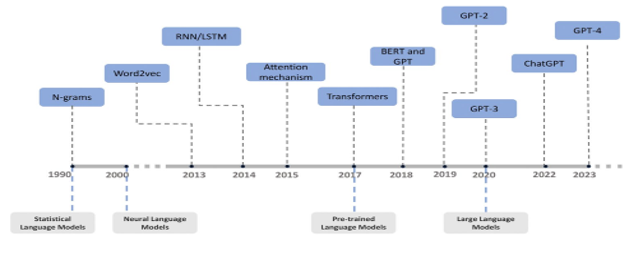

KI im Allgemeinen
Historie
Mit KI und LLMs wird seit etwa dem Zweiten Weltkrieg geforscht, auch (Turing 1950) ist daran beteiligt. Über die Jahrzehnte hat sich einiges getan, aber wie den meisten aufgefallen ist, ist “plötzlich KI überall”. Das lässt sich gut in dem folgenden Bild erkennen:
 (Wang et al. 2024)
Wie im Bild auch zu sehen ist, geht ab der Erfindung des Transformer-Modells alles sehr schnell. Das relevante Paper wurde von (Vaswani et al. 2017) veröffentlicht.
Warum passen die Jahreszahlen 2015 und 2017 nicht zusammen? Klicke hier!
Das Paper von (Vaswani et al. 2017) ist zwar nicht der Ursprung des Attention-Algorithmus, aber es nutzt diese Idee von 2014, um das Transformer-Modell zu entwickeln. Als kleiner Nebenhinweis “GPT” ist vermutlich ein Begriff, steht für “Generative Pre-trained Transformer”.Daran kann man erkennen, wie wichtig dieses Paper ist: Die relevanteste KI unserer Zeit trägt es im Namen.
Einführung
Künstliche Intelligenz (KI) beschreibt Maschinen oder Software, die so gestaltet wurde, dass sie Aufgaben übernimmt, die üblicherweise menschliche Intelligenz erfordern. Dazu gehören Wahrnehmung, Sprachverstehen, Planen, Lernen und Problemlösen.
An AI system is a machine-based system that, for explicit or implicit objectives, infers, from the input it receives, how to generate outputs such as predictions, content, recommendations, or decisions that can influence physical or virtual environments. Different AI systems vary in their levels of autonomy and adaptiveness after deployment.
Hauptansätze der KI
Künstliche Intelligenz ist kein monolithisches Feld, sondern unterteilt sich in verschiedene Ansätze und Techniken. Die wichtigsten davon werden hier vorgestellt.
Symbolische KI (auch „Good Old-Fashioned AI“) basiert auf Regeln, Logik und Wissensrepräsentation. Entwickler definieren explizit das Wissen und die Regeln, nach denen das System Entscheidungen trifft.
- Funktionsweise: Arbeitet mit Symbolen und logischen “Wenn-Dann”-Regeln.
- Vorteil: Die Entscheidungen sind transparent und nachvollziehbar.
- Nachteil: Sehr starr und schlecht skalierbar für komplexe, unstrukturierte Probleme wie Bild- oder Spracherkennung.
Für weiteres: (“Symbolic Artificial Intelligence — Wikipedia” 2025)
Beim maschinellen Lernen (ML) werden die Regeln nicht fest programmiert. Stattdessen lernt ein Algorithmus aus Daten, Muster zu erkennen und Vorhersagen zu treffen. Es ist der am weitesten verbreitete Ansatz in der modernen KI.
Man unterscheidet hauptsächlich drei Arten:
- Überwachtes Lernen (Supervised Learning): Das Modell lernt von Daten, die bereits mit der richtigen Antwort (“Label”) versehen sind (z.B. Bilder von Katzen mit dem Label “Katze”).
- Unüberwachtes Lernen (Unsupervised Learning): Das Modell findet eigenständig Muster und Strukturen in ungelabelten Daten (z.B. Kundensegmentierung).
- Verstärkendes Lernen (Reinforcement Learning): Ein “Agent” lernt durch Versuch und Irrtum, indem er für gute Aktionen belohnt und für schlechte bestraft wird (z.B. beim Training einer KI für ein Brettspiel).
Bei Fragen zu dem Vortrag, frag mich gerne :D
Für weiteres: (Kochenderfer et al. 2020; “Machine Learning — Wikipedia” 2025)
Deep Learning ist ein Teilgebiet des maschinellen Lernens, das besonders tiefe (im Sinne von vielen Lagen hintereinander) neuronale Netze verwendet. Diese Tiefe ermöglicht es dem Modell, sehr komplexe und hierarchische Merkmale aus den Daten zu lernen.
- Merkmalshierarchie: Die ersten Schichten erkennen einfache Merkmale (z.B. Kanten in einem Bild), während tiefere Schichten diese zu komplexeren Konzepten (z.B. Augen, Gesichter) zusammensetzen.
- Anwendungen: Fast alle modernen Durchbrüche wie Bilderkennung, Sprachübersetzung (Google Translate) und selbstfahrende Autos basieren auf Deep Learning. LLMs sind ebenfalls eine Form des Deep Learning.
Für weiteres: (LeCun, Bengio, and Hinton 2015; “Deep Learning — Wikipedia” 2025)
Neuronale Netze sind das Herzstück des Deep Learning. Sie sind von der Struktur des menschlichen Gehirns inspiriert und bestehen aus miteinander verbundenen “Neuronen”, die in Schichten (Layern) angeordnet sind.
- Aufbau: Jedes Neuron empfängt Signale, verarbeitet sie und gibt ein eigenes Signal an die nächste Schicht weiter. Die Verbindungen zwischen den Neuronen haben “Gewichte”, die im Lernprozess angepasst werden.
- Funktion: Durch die Anpassung dieser Gewichte lernt das Netz, komplexe Muster in den Daten zu erkennen – zum Beispiel die Pixelmuster, die eine Katze auf einem Bild ausmachen.
Ein fantastisches Video, das die Grundlagen visuell erklärt, ist von 3Blue1Brown: (Sanderson 2017)
Anwendungsbereiche
Nachdem nun klarer ist, was KI ist und welche Ansätze es gibt, hier ein kurzer Blick auf die Anwendungsbereiche. Am bekanntesten sind derzeit sicherlich die Large Language Models (LLMs) wie ChatGPT. Aber KI steckt auch in vielen anderen Technologien, wie zum Beispiel in der Gesichtserkennung auf dem Smartphone oder in Überwachungskameras.
Vertiefungsmöglichkeiten:
Für alle, die tiefer einsteigen wollen, hier ein paar Empfehlungen. Diese YouTube-Videos werden oft auch von Dozenten an Universitäten empfohlen:
- Der Kanal 3Blue1Brown ist generell eine Goldgrube für visuelle Erklärungen zu Mathe und Informatik.
- Spezifische Videos zum Thema:
Weitere Berichte und Prinzipien finden sich bei der OECD und Stanford: (“OECD AI Principles” 2019; “AI Index Report — Stanford HAI” 2025)